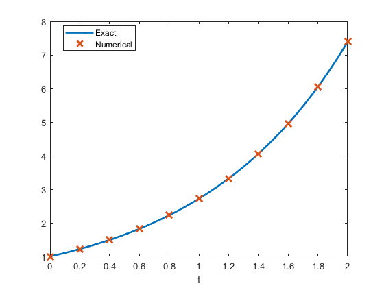
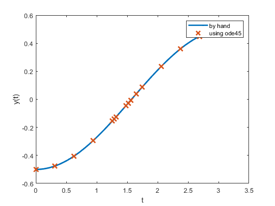
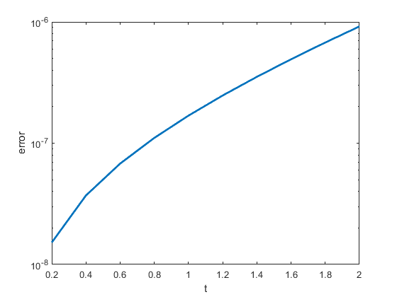
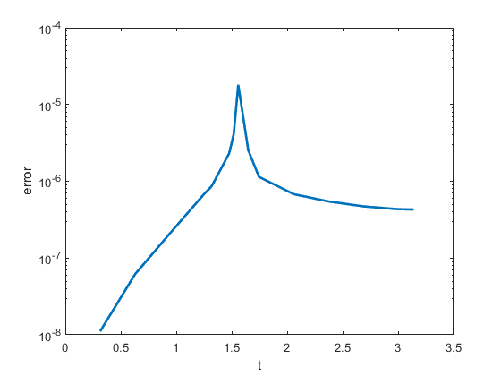
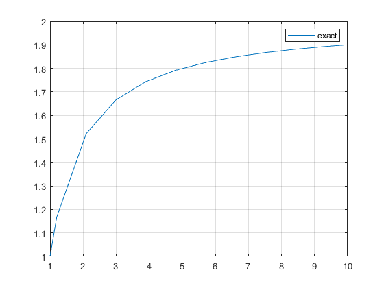
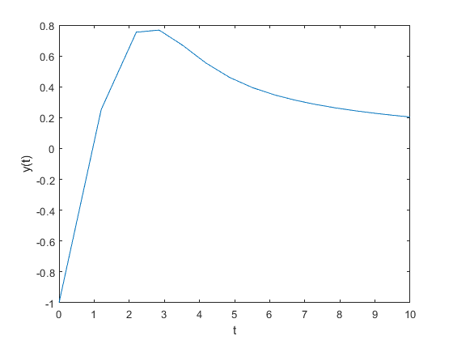
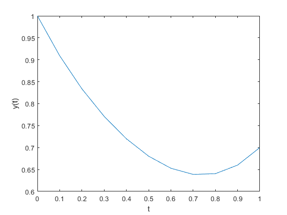
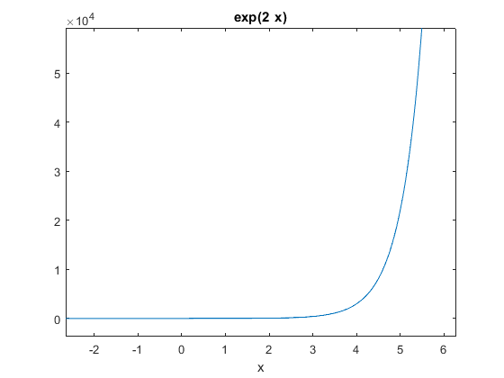
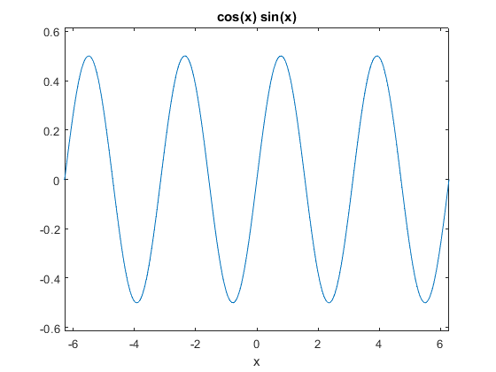
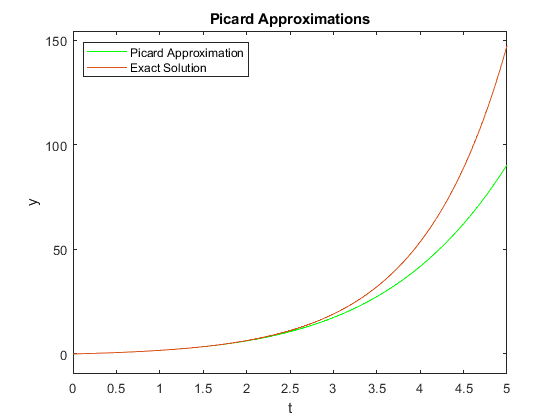

Integrator Lab: Solving First Order ODEs in MATLAB and Picard Approximation
This lab will teach you to numerically solve first order ODEs using a built in MATLAB integrator, ode45. ode45 is a good, general purpose tool for integrating first order equations (and first order systems). It is not always the right algorithm, but it is usually the right algorithm to try first. This lab will also teach you how to manipulate symbolic functions in MATLAB.
You will learn how to use the ode45 routine, how to interpolate between points, and how MATLAB handles data structures. You will also learn how to use MATLAB for exact symbolic calculations and write your own Picard approximation code.
Opening the m-file lab2.m in the MATLAB editor, step through each part using cell mode to see the results. Compare the output with the PDF, which was generated from this m-file.
There are eight exercises in this lab that are to be handed in at the end of the lab. Write your solutions in the template, including appropriate descriptions in each step. Save the .m file and submit it online using Quercus.
Contents
- Student Information
- Set up an inline function representation of an ODE and solve it
- Examining the output
- Understanding the components of the solution data structure
- Visualizing and comparing the solution
- Exercise 1
- Computing an approximation at a specific point
- Exercise 2
- Errors, Step Sizes, and Tolerances
- Exercise 3???
- Exercise 4???
- Exercise 5
- Exercise 6 - When things go wrong
- Using symbolic variables to define functions
- Exercise 7
- Obtaining Picard approximations
- Exercise 8???
Student Information
Student Name: Patricia Nadia Krisanti
Student Number: 1009669404
Set up an inline function representation of an ODE and solve it
MATLAB has many built in routines for solving differential equations of the form
y' = f(t,y)
We will solve them using ode45, a high precision integrator. To do this, we will need to construct an inline function representation of f, an initial condition, and specify how far we want MATLAB to integrate the problem. Once we have set these, we pass the information to ode45 to get the solution.
For a first example, we will solve the initial value problem
y' = y, y(0) = 1
which has as its answer y = e^t.
% Set up the right hand side of the ODE as an inline function f = @(t,y) y; % The initial conditions t0 = 0; y0 = 1; % The time we will integrate until t1 = 2 soln = ode45(f, [t0, t1], y0);
t1 =
2
Examining the output
When we execute the ode45, it returns a data structure, stored in soln. We can see the pieces of the data structure with a display command:
disp(soln);
solver: 'ode45'
extdata: [1×1 struct]
x: [0 0.2000 0.4000 0.6000 0.8000 1 1.2000 1.4000 1.6000 1.8000 2]
y: [1 1.2214 1.4918 1.8221 2.2255 2.7183 3.3201 … ] (1×11 double)
stats: [1×1 struct]
idata: [1×1 struct]
Understanding the components of the solution data structure
The most important elements of the data structure are stored in the x and y components of the structure; these are vectors. Vectors x and y contain the points at which the numerical approximation to the initial vlaue problem has been computed. In other words, y(j) is the approximate value of the solution at x(j).
NOTE: Even though we may be studying a problem like u(t) or y(t), MATLAB will always use x for the independent variable and y for the dependent variable in the data structure.
Pieces of the data structure can be accessed using a period, as in C/C++ or Java. See the examples below:
% Display the values of |t| at which |y(t)| is approximated fprintf(' Vector of t values: '); disp(soln.x); % Display the the corresponding approximatations of |y(t)| fprintf(' Vector of y values: '); disp(soln.y); % Display the approximation of the solution at the 3rd point: fprintf(' Third element of the vector of t values: %g\n',soln.x(3)); fprintf(' Third element of the vector of y values: %g\n',soln.y(3));
Vector of t values: Columns 1 through 7
0 0.2000 0.4000 0.6000 0.8000 1.0000 1.2000
Columns 8 through 11
1.4000 1.6000 1.8000 2.0000
Vector of y values: Columns 1 through 7
1.0000 1.2214 1.4918 1.8221 2.2255 2.7183 3.3201
Columns 8 through 11
4.0552 4.9530 6.0496 7.3891
Third element of the vector of t values: 0.4
Third element of the vector of y values: 1.49182
Visualizing and comparing the solution
We can now visualize the solution at the computed data points and compare with the exact solution.
% Construct the exact solution tt = linspace(0,2,50); yy = exp(tt); % Plot both on the same figure, plotting the approximation with x's plot(tt, yy, soln.x, soln.y, 'x', 'MarkerSize',10, 'LineWidth', 2); % NOTE: the MarkerSize and LineWidth are larger than their defaults of 6 % and 1, respectively. This makes the print out more readable. % Add a label to the axis and a legend xlabel('t'); legend('Exact', 'Numerical','Location','Best');
Exercise 1
Objective: Solve an initial value problem and plot both the numerical approximation and the corresponding exact solution.
Details: Solve the IVP
y' = y tan t + sin t, y(0) = -1/2
from t = 0 to t = pi.
Compute the exact solution (by hand), and plot both on the same figure for comparison, as above.
Your submission should show the construction of the inline function, the use of ode45 to obtain the solution, a construction of the exact solution, and a plot showing both. In the comments, include the exact solution.
Label your axes and include a legend.
f = @(t,y) y*tan(t)+sin(t); % The initial conditions t0 = 0; y0 = -1/2; % The time we will integrate until t1 = pi sol = ode45(f, [t0, t1], y0); %plot(sol.x,sol.y) x=linspace(0,pi,1000) y=-cos(x)/2 plot(x,y, sol.x, sol.y,'x', 'MarkerSize',10, 'LineWidth', 2 ) xlabel('t') ylabel('y(t)') legend('by hand', 'using ode45');
t1 =
3.1416
x =
Columns 1 through 7
0 0.0031 0.0063 0.0094 0.0126 0.0157 0.0189
Columns 8 through 14
0.0220 0.0252 0.0283 0.0314 0.0346 0.0377 0.0409
Columns 15 through 21
0.0440 0.0472 0.0503 0.0535 0.0566 0.0598 0.0629
Columns 22 through 28
0.0660 0.0692 0.0723 0.0755 0.0786 0.0818 0.0849
Columns 29 through 35
0.0881 0.0912 0.0943 0.0975 0.1006 0.1038 0.1069
Columns 36 through 42
0.1101 0.1132 0.1164 0.1195 0.1226 0.1258 0.1289
Columns 43 through 49
0.1321 0.1352 0.1384 0.1415 0.1447 0.1478 0.1509
Columns 50 through 56
0.1541 0.1572 0.1604 0.1635 0.1667 0.1698 0.1730
Columns 57 through 63
0.1761 0.1793 0.1824 0.1855 0.1887 0.1918 0.1950
Columns 64 through 70
0.1981 0.2013 0.2044 0.2076 0.2107 0.2138 0.2170
Columns 71 through 77
0.2201 0.2233 0.2264 0.2296 0.2327 0.2359 0.2390
Columns 78 through 84
0.2421 0.2453 0.2484 0.2516 0.2547 0.2579 0.2610
Columns 85 through 91
0.2642 0.2673 0.2704 0.2736 0.2767 0.2799 0.2830
Columns 92 through 98
0.2862 0.2893 0.2925 0.2956 0.2988 0.3019 0.3050
Columns 99 through 105
0.3082 0.3113 0.3145 0.3176 0.3208 0.3239 0.3271
Columns 106 through 112
0.3302 0.3333 0.3365 0.3396 0.3428 0.3459 0.3491
Columns 113 through 119
0.3522 0.3554 0.3585 0.3616 0.3648 0.3679 0.3711
Columns 120 through 126
0.3742 0.3774 0.3805 0.3837 0.3868 0.3899 0.3931
Columns 127 through 133
0.3962 0.3994 0.4025 0.4057 0.4088 0.4120 0.4151
Columns 134 through 140
0.4183 0.4214 0.4245 0.4277 0.4308 0.4340 0.4371
Columns 141 through 147
0.4403 0.4434 0.4466 0.4497 0.4528 0.4560 0.4591
Columns 148 through 154
0.4623 0.4654 0.4686 0.4717 0.4749 0.4780 0.4811
Columns 155 through 161
0.4843 0.4874 0.4906 0.4937 0.4969 0.5000 0.5032
Columns 162 through 168
0.5063 0.5094 0.5126 0.5157 0.5189 0.5220 0.5252
Columns 169 through 175
0.5283 0.5315 0.5346 0.5378 0.5409 0.5440 0.5472
Columns 176 through 182
0.5503 0.5535 0.5566 0.5598 0.5629 0.5661 0.5692
Columns 183 through 189
0.5723 0.5755 0.5786 0.5818 0.5849 0.5881 0.5912
Columns 190 through 196
0.5944 0.5975 0.6006 0.6038 0.6069 0.6101 0.6132
Columns 197 through 203
0.6164 0.6195 0.6227 0.6258 0.6289 0.6321 0.6352
Columns 204 through 210
0.6384 0.6415 0.6447 0.6478 0.6510 0.6541 0.6573
Columns 211 through 217
0.6604 0.6635 0.6667 0.6698 0.6730 0.6761 0.6793
Columns 218 through 224
0.6824 0.6856 0.6887 0.6918 0.6950 0.6981 0.7013
Columns 225 through 231
0.7044 0.7076 0.7107 0.7139 0.7170 0.7201 0.7233
Columns 232 through 238
0.7264 0.7296 0.7327 0.7359 0.7390 0.7422 0.7453
Columns 239 through 245
0.7484 0.7516 0.7547 0.7579 0.7610 0.7642 0.7673
Columns 246 through 252
0.7705 0.7736 0.7768 0.7799 0.7830 0.7862 0.7893
Columns 253 through 259
0.7925 0.7956 0.7988 0.8019 0.8051 0.8082 0.8113
Columns 260 through 266
0.8145 0.8176 0.8208 0.8239 0.8271 0.8302 0.8334
Columns 267 through 273
0.8365 0.8396 0.8428 0.8459 0.8491 0.8522 0.8554
Columns 274 through 280
0.8585 0.8617 0.8648 0.8679 0.8711 0.8742 0.8774
Columns 281 through 287
0.8805 0.8837 0.8868 0.8900 0.8931 0.8963 0.8994
Columns 288 through 294
0.9025 0.9057 0.9088 0.9120 0.9151 0.9183 0.9214
Columns 295 through 301
0.9246 0.9277 0.9308 0.9340 0.9371 0.9403 0.9434
Columns 302 through 308
0.9466 0.9497 0.9529 0.9560 0.9591 0.9623 0.9654
Columns 309 through 315
0.9686 0.9717 0.9749 0.9780 0.9812 0.9843 0.9874
Columns 316 through 322
0.9906 0.9937 0.9969 1.0000 1.0032 1.0063 1.0095
Columns 323 through 329
1.0126 1.0158 1.0189 1.0220 1.0252 1.0283 1.0315
Columns 330 through 336
1.0346 1.0378 1.0409 1.0441 1.0472 1.0503 1.0535
Columns 337 through 343
1.0566 1.0598 1.0629 1.0661 1.0692 1.0724 1.0755
Columns 344 through 350
1.0786 1.0818 1.0849 1.0881 1.0912 1.0944 1.0975
Columns 351 through 357
1.1007 1.1038 1.1069 1.1101 1.1132 1.1164 1.1195
Columns 358 through 364
1.1227 1.1258 1.1290 1.1321 1.1353 1.1384 1.1415
Columns 365 through 371
1.1447 1.1478 1.1510 1.1541 1.1573 1.1604 1.1636
Columns 372 through 378
1.1667 1.1698 1.1730 1.1761 1.1793 1.1824 1.1856
Columns 379 through 385
1.1887 1.1919 1.1950 1.1981 1.2013 1.2044 1.2076
Columns 386 through 392
1.2107 1.2139 1.2170 1.2202 1.2233 1.2264 1.2296
Columns 393 through 399
1.2327 1.2359 1.2390 1.2422 1.2453 1.2485 1.2516
Columns 400 through 406
1.2548 1.2579 1.2610 1.2642 1.2673 1.2705 1.2736
Columns 407 through 413
1.2768 1.2799 1.2831 1.2862 1.2893 1.2925 1.2956
Columns 414 through 420
1.2988 1.3019 1.3051 1.3082 1.3114 1.3145 1.3176
Columns 421 through 427
1.3208 1.3239 1.3271 1.3302 1.3334 1.3365 1.3397
Columns 428 through 434
1.3428 1.3459 1.3491 1.3522 1.3554 1.3585 1.3617
Columns 435 through 441
1.3648 1.3680 1.3711 1.3743 1.3774 1.3805 1.3837
Columns 442 through 448
1.3868 1.3900 1.3931 1.3963 1.3994 1.4026 1.4057
Columns 449 through 455
1.4088 1.4120 1.4151 1.4183 1.4214 1.4246 1.4277
Columns 456 through 462
1.4309 1.4340 1.4371 1.4403 1.4434 1.4466 1.4497
Columns 463 through 469
1.4529 1.4560 1.4592 1.4623 1.4654 1.4686 1.4717
Columns 470 through 476
1.4749 1.4780 1.4812 1.4843 1.4875 1.4906 1.4938
Columns 477 through 483
1.4969 1.5000 1.5032 1.5063 1.5095 1.5126 1.5158
Columns 484 through 490
1.5189 1.5221 1.5252 1.5283 1.5315 1.5346 1.5378
Columns 491 through 497
1.5409 1.5441 1.5472 1.5504 1.5535 1.5566 1.5598
Columns 498 through 504
1.5629 1.5661 1.5692 1.5724 1.5755 1.5787 1.5818
Columns 505 through 511
1.5849 1.5881 1.5912 1.5944 1.5975 1.6007 1.6038
Columns 512 through 518
1.6070 1.6101 1.6133 1.6164 1.6195 1.6227 1.6258
Columns 519 through 525
1.6290 1.6321 1.6353 1.6384 1.6416 1.6447 1.6478
Columns 526 through 532
1.6510 1.6541 1.6573 1.6604 1.6636 1.6667 1.6699
Columns 533 through 539
1.6730 1.6761 1.6793 1.6824 1.6856 1.6887 1.6919
Columns 540 through 546
1.6950 1.6982 1.7013 1.7044 1.7076 1.7107 1.7139
Columns 547 through 553
1.7170 1.7202 1.7233 1.7265 1.7296 1.7328 1.7359
Columns 554 through 560
1.7390 1.7422 1.7453 1.7485 1.7516 1.7548 1.7579
Columns 561 through 567
1.7611 1.7642 1.7673 1.7705 1.7736 1.7768 1.7799
Columns 568 through 574
1.7831 1.7862 1.7894 1.7925 1.7956 1.7988 1.8019
Columns 575 through 581
1.8051 1.8082 1.8114 1.8145 1.8177 1.8208 1.8239
Columns 582 through 588
1.8271 1.8302 1.8334 1.8365 1.8397 1.8428 1.8460
Columns 589 through 595
1.8491 1.8523 1.8554 1.8585 1.8617 1.8648 1.8680
Columns 596 through 602
1.8711 1.8743 1.8774 1.8806 1.8837 1.8868 1.8900
Columns 603 through 609
1.8931 1.8963 1.8994 1.9026 1.9057 1.9089 1.9120
Columns 610 through 616
1.9151 1.9183 1.9214 1.9246 1.9277 1.9309 1.9340
Columns 617 through 623
1.9372 1.9403 1.9434 1.9466 1.9497 1.9529 1.9560
Columns 624 through 630
1.9592 1.9623 1.9655 1.9686 1.9718 1.9749 1.9780
Columns 631 through 637
1.9812 1.9843 1.9875 1.9906 1.9938 1.9969 2.0001
Columns 638 through 644
2.0032 2.0063 2.0095 2.0126 2.0158 2.0189 2.0221
Columns 645 through 651
2.0252 2.0284 2.0315 2.0346 2.0378 2.0409 2.0441
Columns 652 through 658
2.0472 2.0504 2.0535 2.0567 2.0598 2.0629 2.0661
Columns 659 through 665
2.0692 2.0724 2.0755 2.0787 2.0818 2.0850 2.0881
Columns 666 through 672
2.0913 2.0944 2.0975 2.1007 2.1038 2.1070 2.1101
Columns 673 through 679
2.1133 2.1164 2.1196 2.1227 2.1258 2.1290 2.1321
Columns 680 through 686
2.1353 2.1384 2.1416 2.1447 2.1479 2.1510 2.1541
Columns 687 through 693
2.1573 2.1604 2.1636 2.1667 2.1699 2.1730 2.1762
Columns 694 through 700
2.1793 2.1824 2.1856 2.1887 2.1919 2.1950 2.1982
Columns 701 through 707
2.2013 2.2045 2.2076 2.2108 2.2139 2.2170 2.2202
Columns 708 through 714
2.2233 2.2265 2.2296 2.2328 2.2359 2.2391 2.2422
Columns 715 through 721
2.2453 2.2485 2.2516 2.2548 2.2579 2.2611 2.2642
Columns 722 through 728
2.2674 2.2705 2.2736 2.2768 2.2799 2.2831 2.2862
Columns 729 through 735
2.2894 2.2925 2.2957 2.2988 2.3019 2.3051 2.3082
Columns 736 through 742
2.3114 2.3145 2.3177 2.3208 2.3240 2.3271 2.3303
Columns 743 through 749
2.3334 2.3365 2.3397 2.3428 2.3460 2.3491 2.3523
Columns 750 through 756
2.3554 2.3586 2.3617 2.3648 2.3680 2.3711 2.3743
Columns 757 through 763
2.3774 2.3806 2.3837 2.3869 2.3900 2.3931 2.3963
Columns 764 through 770
2.3994 2.4026 2.4057 2.4089 2.4120 2.4152 2.4183
Columns 771 through 777
2.4214 2.4246 2.4277 2.4309 2.4340 2.4372 2.4403
Columns 778 through 784
2.4435 2.4466 2.4498 2.4529 2.4560 2.4592 2.4623
Columns 785 through 791
2.4655 2.4686 2.4718 2.4749 2.4781 2.4812 2.4843
Columns 792 through 798
2.4875 2.4906 2.4938 2.4969 2.5001 2.5032 2.5064
Columns 799 through 805
2.5095 2.5126 2.5158 2.5189 2.5221 2.5252 2.5284
Columns 806 through 812
2.5315 2.5347 2.5378 2.5409 2.5441 2.5472 2.5504
Columns 813 through 819
2.5535 2.5567 2.5598 2.5630 2.5661 2.5693 2.5724
Columns 820 through 826
2.5755 2.5787 2.5818 2.5850 2.5881 2.5913 2.5944
Columns 827 through 833
2.5976 2.6007 2.6038 2.6070 2.6101 2.6133 2.6164
Columns 834 through 840
2.6196 2.6227 2.6259 2.6290 2.6321 2.6353 2.6384
Columns 841 through 847
2.6416 2.6447 2.6479 2.6510 2.6542 2.6573 2.6604
Columns 848 through 854
2.6636 2.6667 2.6699 2.6730 2.6762 2.6793 2.6825
Columns 855 through 861
2.6856 2.6888 2.6919 2.6950 2.6982 2.7013 2.7045
Columns 862 through 868
2.7076 2.7108 2.7139 2.7171 2.7202 2.7233 2.7265
Columns 869 through 875
2.7296 2.7328 2.7359 2.7391 2.7422 2.7454 2.7485
Columns 876 through 882
2.7516 2.7548 2.7579 2.7611 2.7642 2.7674 2.7705
Columns 883 through 889
2.7737 2.7768 2.7799 2.7831 2.7862 2.7894 2.7925
Columns 890 through 896
2.7957 2.7988 2.8020 2.8051 2.8083 2.8114 2.8145
Columns 897 through 903
2.8177 2.8208 2.8240 2.8271 2.8303 2.8334 2.8366
Columns 904 through 910
2.8397 2.8428 2.8460 2.8491 2.8523 2.8554 2.8586
Columns 911 through 917
2.8617 2.8649 2.8680 2.8711 2.8743 2.8774 2.8806
Columns 918 through 924
2.8837 2.8869 2.8900 2.8932 2.8963 2.8994 2.9026
Columns 925 through 931
2.9057 2.9089 2.9120 2.9152 2.9183 2.9215 2.9246
Columns 932 through 938
2.9278 2.9309 2.9340 2.9372 2.9403 2.9435 2.9466
Columns 939 through 945
2.9498 2.9529 2.9561 2.9592 2.9623 2.9655 2.9686
Columns 946 through 952
2.9718 2.9749 2.9781 2.9812 2.9844 2.9875 2.9906
Columns 953 through 959
2.9938 2.9969 3.0001 3.0032 3.0064 3.0095 3.0127
Columns 960 through 966
3.0158 3.0189 3.0221 3.0252 3.0284 3.0315 3.0347
Columns 967 through 973
3.0378 3.0410 3.0441 3.0473 3.0504 3.0535 3.0567
Columns 974 through 980
3.0598 3.0630 3.0661 3.0693 3.0724 3.0756 3.0787
Columns 981 through 987
3.0818 3.0850 3.0881 3.0913 3.0944 3.0976 3.1007
Columns 988 through 994
3.1039 3.1070 3.1101 3.1133 3.1164 3.1196 3.1227
Columns 995 through 1,000
3.1259 3.1290 3.1322 3.1353 3.1384 3.1416
y =
Columns 1 through 7
-0.5000 -0.5000 -0.5000 -0.5000 -0.5000 -0.4999 -0.4999
Columns 8 through 14
-0.4999 -0.4998 -0.4998 -0.4998 -0.4997 -0.4996 -0.4996
Columns 15 through 21
-0.4995 -0.4994 -0.4994 -0.4993 -0.4992 -0.4991 -0.4990
Columns 22 through 28
-0.4989 -0.4988 -0.4987 -0.4986 -0.4985 -0.4983 -0.4982
Columns 29 through 35
-0.4981 -0.4979 -0.4978 -0.4976 -0.4975 -0.4973 -0.4971
Columns 36 through 42
-0.4970 -0.4968 -0.4966 -0.4964 -0.4962 -0.4960 -0.4958
Columns 43 through 49
-0.4956 -0.4954 -0.4952 -0.4950 -0.4948 -0.4945 -0.4943
Columns 50 through 56
-0.4941 -0.4938 -0.4936 -0.4933 -0.4931 -0.4928 -0.4925
Columns 57 through 63
-0.4923 -0.4920 -0.4917 -0.4914 -0.4911 -0.4908 -0.4905
Columns 64 through 70
-0.4902 -0.4899 -0.4896 -0.4893 -0.4889 -0.4886 -0.4883
Columns 71 through 77
-0.4879 -0.4876 -0.4872 -0.4869 -0.4865 -0.4862 -0.4858
Columns 78 through 84
-0.4854 -0.4850 -0.4846 -0.4843 -0.4839 -0.4835 -0.4831
Columns 85 through 91
-0.4827 -0.4822 -0.4818 -0.4814 -0.4810 -0.4805 -0.4801
Columns 92 through 98
-0.4797 -0.4792 -0.4788 -0.4783 -0.4779 -0.4774 -0.4769
Columns 99 through 105
-0.4764 -0.4760 -0.4755 -0.4750 -0.4745 -0.4740 -0.4735
Columns 106 through 112
-0.4730 -0.4725 -0.4720 -0.4714 -0.4709 -0.4704 -0.4698
Columns 113 through 119
-0.4693 -0.4688 -0.4682 -0.4677 -0.4671 -0.4665 -0.4660
Columns 120 through 126
-0.4654 -0.4648 -0.4642 -0.4637 -0.4631 -0.4625 -0.4619
Columns 127 through 133
-0.4613 -0.4607 -0.4600 -0.4594 -0.4588 -0.4582 -0.4575
Columns 134 through 140
-0.4569 -0.4563 -0.4556 -0.4550 -0.4543 -0.4537 -0.4530
Columns 141 through 147
-0.4523 -0.4516 -0.4510 -0.4503 -0.4496 -0.4489 -0.4482
Columns 148 through 154
-0.4475 -0.4468 -0.4461 -0.4454 -0.4447 -0.4440 -0.4432
Columns 155 through 161
-0.4425 -0.4418 -0.4410 -0.4403 -0.4395 -0.4388 -0.4380
Columns 162 through 168
-0.4373 -0.4365 -0.4357 -0.4350 -0.4342 -0.4334 -0.4326
Columns 169 through 175
-0.4318 -0.4310 -0.4302 -0.4294 -0.4286 -0.4278 -0.4270
Columns 176 through 182
-0.4262 -0.4254 -0.4245 -0.4237 -0.4229 -0.4220 -0.4212
Columns 183 through 189
-0.4203 -0.4195 -0.4186 -0.4177 -0.4169 -0.4160 -0.4151
Columns 190 through 196
-0.4143 -0.4134 -0.4125 -0.4116 -0.4107 -0.4098 -0.4089
Columns 197 through 203
-0.4080 -0.4071 -0.4062 -0.4052 -0.4043 -0.4034 -0.4025
Columns 204 through 210
-0.4015 -0.4006 -0.3996 -0.3987 -0.3978 -0.3968 -0.3958
Columns 211 through 217
-0.3949 -0.3939 -0.3929 -0.3920 -0.3910 -0.3900 -0.3890
Columns 218 through 224
-0.3880 -0.3870 -0.3860 -0.3850 -0.3840 -0.3830 -0.3820
Columns 225 through 231
-0.3810 -0.3800 -0.3789 -0.3779 -0.3769 -0.3759 -0.3748
Columns 232 through 238
-0.3738 -0.3727 -0.3717 -0.3706 -0.3696 -0.3685 -0.3674
Columns 239 through 245
-0.3664 -0.3653 -0.3642 -0.3631 -0.3621 -0.3610 -0.3599
Columns 246 through 252
-0.3588 -0.3577 -0.3566 -0.3555 -0.3544 -0.3533 -0.3522
Columns 253 through 259
-0.3510 -0.3499 -0.3488 -0.3477 -0.3465 -0.3454 -0.3443
Columns 260 through 266
-0.3431 -0.3420 -0.3408 -0.3397 -0.3385 -0.3374 -0.3362
Columns 267 through 273
-0.3350 -0.3339 -0.3327 -0.3315 -0.3303 -0.3292 -0.3280
Columns 274 through 280
-0.3268 -0.3256 -0.3244 -0.3232 -0.3220 -0.3208 -0.3196
Columns 281 through 287
-0.3184 -0.3172 -0.3159 -0.3147 -0.3135 -0.3123 -0.3110
Columns 288 through 294
-0.3098 -0.3086 -0.3073 -0.3061 -0.3048 -0.3036 -0.3023
Columns 295 through 301
-0.3011 -0.2998 -0.2986 -0.2973 -0.2961 -0.2948 -0.2935
Columns 302 through 308
-0.2922 -0.2910 -0.2897 -0.2884 -0.2871 -0.2858 -0.2845
Columns 309 through 315
-0.2832 -0.2819 -0.2806 -0.2793 -0.2780 -0.2767 -0.2754
Columns 316 through 322
-0.2741 -0.2728 -0.2715 -0.2701 -0.2688 -0.2675 -0.2662
Columns 323 through 329
-0.2648 -0.2635 -0.2622 -0.2608 -0.2595 -0.2581 -0.2568
Columns 330 through 336
-0.2554 -0.2541 -0.2527 -0.2514 -0.2500 -0.2486 -0.2473
Columns 337 through 343
-0.2459 -0.2445 -0.2432 -0.2418 -0.2404 -0.2390 -0.2376
Columns 344 through 350
-0.2363 -0.2349 -0.2335 -0.2321 -0.2307 -0.2293 -0.2279
Columns 351 through 357
-0.2265 -0.2251 -0.2237 -0.2223 -0.2209 -0.2195 -0.2181
Columns 358 through 364
-0.2166 -0.2152 -0.2138 -0.2124 -0.2110 -0.2095 -0.2081
Columns 365 through 371
-0.2067 -0.2052 -0.2038 -0.2024 -0.2009 -0.1995 -0.1980
Columns 372 through 378
-0.1966 -0.1951 -0.1937 -0.1922 -0.1908 -0.1893 -0.1879
Columns 379 through 385
-0.1864 -0.1850 -0.1835 -0.1820 -0.1806 -0.1791 -0.1776
Columns 386 through 392
-0.1762 -0.1747 -0.1732 -0.1717 -0.1703 -0.1688 -0.1673
Columns 393 through 399
-0.1658 -0.1643 -0.1629 -0.1614 -0.1599 -0.1584 -0.1569
Columns 400 through 406
-0.1554 -0.1539 -0.1524 -0.1509 -0.1494 -0.1479 -0.1464
Columns 407 through 413
-0.1449 -0.1434 -0.1419 -0.1404 -0.1389 -0.1374 -0.1359
Columns 414 through 420
-0.1343 -0.1328 -0.1313 -0.1298 -0.1283 -0.1267 -0.1252
Columns 421 through 427
-0.1237 -0.1222 -0.1207 -0.1191 -0.1176 -0.1161 -0.1145
Columns 428 through 434
-0.1130 -0.1115 -0.1099 -0.1084 -0.1069 -0.1053 -0.1038
Columns 435 through 441
-0.1023 -0.1007 -0.0992 -0.0976 -0.0961 -0.0946 -0.0930
Columns 442 through 448
-0.0915 -0.0899 -0.0884 -0.0868 -0.0853 -0.0837 -0.0822
Columns 449 through 455
-0.0806 -0.0791 -0.0775 -0.0760 -0.0744 -0.0729 -0.0713
Columns 456 through 462
-0.0697 -0.0682 -0.0666 -0.0651 -0.0635 -0.0619 -0.0604
Columns 463 through 469
-0.0588 -0.0573 -0.0557 -0.0541 -0.0526 -0.0510 -0.0494
Columns 470 through 476
-0.0479 -0.0463 -0.0448 -0.0432 -0.0416 -0.0401 -0.0385
Columns 477 through 483
-0.0369 -0.0353 -0.0338 -0.0322 -0.0306 -0.0291 -0.0275
Columns 484 through 490
-0.0259 -0.0244 -0.0228 -0.0212 -0.0196 -0.0181 -0.0165
Columns 491 through 497
-0.0149 -0.0134 -0.0118 -0.0102 -0.0086 -0.0071 -0.0055
Columns 498 through 504
-0.0039 -0.0024 -0.0008 0.0008 0.0024 0.0039 0.0055
Columns 505 through 511
0.0071 0.0086 0.0102 0.0118 0.0134 0.0149 0.0165
Columns 512 through 518
0.0181 0.0196 0.0212 0.0228 0.0244 0.0259 0.0275
Columns 519 through 525
0.0291 0.0306 0.0322 0.0338 0.0353 0.0369 0.0385
Columns 526 through 532
0.0401 0.0416 0.0432 0.0448 0.0463 0.0479 0.0494
Columns 533 through 539
0.0510 0.0526 0.0541 0.0557 0.0573 0.0588 0.0604
Columns 540 through 546
0.0619 0.0635 0.0651 0.0666 0.0682 0.0697 0.0713
Columns 547 through 553
0.0729 0.0744 0.0760 0.0775 0.0791 0.0806 0.0822
Columns 554 through 560
0.0837 0.0853 0.0868 0.0884 0.0899 0.0915 0.0930
Columns 561 through 567
0.0946 0.0961 0.0976 0.0992 0.1007 0.1023 0.1038
Columns 568 through 574
0.1053 0.1069 0.1084 0.1099 0.1115 0.1130 0.1145
Columns 575 through 581
0.1161 0.1176 0.1191 0.1207 0.1222 0.1237 0.1252
Columns 582 through 588
0.1267 0.1283 0.1298 0.1313 0.1328 0.1343 0.1359
Columns 589 through 595
0.1374 0.1389 0.1404 0.1419 0.1434 0.1449 0.1464
Columns 596 through 602
0.1479 0.1494 0.1509 0.1524 0.1539 0.1554 0.1569
Columns 603 through 609
0.1584 0.1599 0.1614 0.1629 0.1643 0.1658 0.1673
Columns 610 through 616
0.1688 0.1703 0.1717 0.1732 0.1747 0.1762 0.1776
Columns 617 through 623
0.1791 0.1806 0.1820 0.1835 0.1850 0.1864 0.1879
Columns 624 through 630
0.1893 0.1908 0.1922 0.1937 0.1951 0.1966 0.1980
Columns 631 through 637
0.1995 0.2009 0.2024 0.2038 0.2052 0.2067 0.2081
Columns 638 through 644
0.2095 0.2110 0.2124 0.2138 0.2152 0.2166 0.2181
Columns 645 through 651
0.2195 0.2209 0.2223 0.2237 0.2251 0.2265 0.2279
Columns 652 through 658
0.2293 0.2307 0.2321 0.2335 0.2349 0.2363 0.2376
Columns 659 through 665
0.2390 0.2404 0.2418 0.2432 0.2445 0.2459 0.2473
Columns 666 through 672
0.2486 0.2500 0.2514 0.2527 0.2541 0.2554 0.2568
Columns 673 through 679
0.2581 0.2595 0.2608 0.2622 0.2635 0.2648 0.2662
Columns 680 through 686
0.2675 0.2688 0.2701 0.2715 0.2728 0.2741 0.2754
Columns 687 through 693
0.2767 0.2780 0.2793 0.2806 0.2819 0.2832 0.2845
Columns 694 through 700
0.2858 0.2871 0.2884 0.2897 0.2910 0.2922 0.2935
Columns 701 through 707
0.2948 0.2961 0.2973 0.2986 0.2998 0.3011 0.3023
Columns 708 through 714
0.3036 0.3048 0.3061 0.3073 0.3086 0.3098 0.3110
Columns 715 through 721
0.3123 0.3135 0.3147 0.3159 0.3172 0.3184 0.3196
Columns 722 through 728
0.3208 0.3220 0.3232 0.3244 0.3256 0.3268 0.3280
Columns 729 through 735
0.3292 0.3303 0.3315 0.3327 0.3339 0.3350 0.3362
Columns 736 through 742
0.3374 0.3385 0.3397 0.3408 0.3420 0.3431 0.3443
Columns 743 through 749
0.3454 0.3465 0.3477 0.3488 0.3499 0.3510 0.3522
Columns 750 through 756
0.3533 0.3544 0.3555 0.3566 0.3577 0.3588 0.3599
Columns 757 through 763
0.3610 0.3621 0.3631 0.3642 0.3653 0.3664 0.3674
Columns 764 through 770
0.3685 0.3696 0.3706 0.3717 0.3727 0.3738 0.3748
Columns 771 through 777
0.3759 0.3769 0.3779 0.3789 0.3800 0.3810 0.3820
Columns 778 through 784
0.3830 0.3840 0.3850 0.3860 0.3870 0.3880 0.3890
Columns 785 through 791
0.3900 0.3910 0.3920 0.3929 0.3939 0.3949 0.3958
Columns 792 through 798
0.3968 0.3978 0.3987 0.3996 0.4006 0.4015 0.4025
Columns 799 through 805
0.4034 0.4043 0.4052 0.4062 0.4071 0.4080 0.4089
Columns 806 through 812
0.4098 0.4107 0.4116 0.4125 0.4134 0.4143 0.4151
Columns 813 through 819
0.4160 0.4169 0.4177 0.4186 0.4195 0.4203 0.4212
Columns 820 through 826
0.4220 0.4229 0.4237 0.4245 0.4254 0.4262 0.4270
Columns 827 through 833
0.4278 0.4286 0.4294 0.4302 0.4310 0.4318 0.4326
Columns 834 through 840
0.4334 0.4342 0.4350 0.4357 0.4365 0.4373 0.4380
Columns 841 through 847
0.4388 0.4395 0.4403 0.4410 0.4418 0.4425 0.4432
Columns 848 through 854
0.4440 0.4447 0.4454 0.4461 0.4468 0.4475 0.4482
Columns 855 through 861
0.4489 0.4496 0.4503 0.4510 0.4516 0.4523 0.4530
Columns 862 through 868
0.4537 0.4543 0.4550 0.4556 0.4563 0.4569 0.4575
Columns 869 through 875
0.4582 0.4588 0.4594 0.4600 0.4607 0.4613 0.4619
Columns 876 through 882
0.4625 0.4631 0.4637 0.4642 0.4648 0.4654 0.4660
Columns 883 through 889
0.4665 0.4671 0.4677 0.4682 0.4688 0.4693 0.4698
Columns 890 through 896
0.4704 0.4709 0.4714 0.4720 0.4725 0.4730 0.4735
Columns 897 through 903
0.4740 0.4745 0.4750 0.4755 0.4760 0.4764 0.4769
Columns 904 through 910
0.4774 0.4779 0.4783 0.4788 0.4792 0.4797 0.4801
Columns 911 through 917
0.4805 0.4810 0.4814 0.4818 0.4822 0.4827 0.4831
Columns 918 through 924
0.4835 0.4839 0.4843 0.4846 0.4850 0.4854 0.4858
Columns 925 through 931
0.4862 0.4865 0.4869 0.4872 0.4876 0.4879 0.4883
Columns 932 through 938
0.4886 0.4889 0.4893 0.4896 0.4899 0.4902 0.4905
Columns 939 through 945
0.4908 0.4911 0.4914 0.4917 0.4920 0.4923 0.4925
Columns 946 through 952
0.4928 0.4931 0.4933 0.4936 0.4938 0.4941 0.4943
Columns 953 through 959
0.4945 0.4948 0.4950 0.4952 0.4954 0.4956 0.4958
Columns 960 through 966
0.4960 0.4962 0.4964 0.4966 0.4968 0.4970 0.4971
Columns 967 through 973
0.4973 0.4975 0.4976 0.4978 0.4979 0.4981 0.4982
Columns 974 through 980
0.4983 0.4985 0.4986 0.4987 0.4988 0.4989 0.4990
Columns 981 through 987
0.4991 0.4992 0.4993 0.4994 0.4994 0.4995 0.4996
Columns 988 through 994
0.4996 0.4997 0.4998 0.4998 0.4998 0.4999 0.4999
Columns 995 through 1,000
0.4999 0.5000 0.5000 0.5000 0.5000 0.5000
 Computing an approximation at a specific point
As you should be able to see by examining soln.x, ode45 returns the solution at a number of points between t0 and t1. But sometimes we want to know the solution at some intermediate point.
To obtain this value, we need to interpolate it in a consistent way. Fortunately, MATLAB provides a convenient function, deval, specifically for this.
% Compute the solution at t = .25: deval(soln, .25) % Compute the solution at t = 1.6753: fprintf(' Solution at 1.6753: %g\n', deval(soln, 1.6753)); % Compute the solution at 10 grid points between .45 and 1.65: tinterp = linspace(.45, 1.65, 10); deval(soln, tinterp) % Alternatively: deval(soln, linspace(.45, 1.65, 10))
ans =
1.2840
Solution at 1.6753: 5.3404
ans =
Columns 1 through 7
1.5683 1.7920 2.0476 2.3396 2.6734 3.0547 3.4903
Columns 8 through 10
3.9882 4.5570 5.2070
ans =
Columns 1 through 7
1.5683 1.7920 2.0476 2.3396 2.6734 3.0547 3.4903
Columns 8 through 10
3.9882 4.5570 5.2070
Exercise 2
Objective: Interpolate a solution at a number of grid points
Details: For the solution you computed in exercise 1, use deval to compute the interpolated values at 10 grid points between 2 and 3.
interp=linspace(2,3,10); deval(sol,interp)
ans =
Columns 1 through 7
0.2081 0.2572 0.3032 0.3454 0.3833 0.4166 0.4447
Columns 8 through 10
0.4673 0.4841 0.4950
Errors, Step Sizes, and Tolerances
As you may have noticed, in contrast to the IODE software, at no point do we set a step size for our solution. Indeed, the step size is set adaptively to conform to a specified error tolerance.
Roughly speaking, given the solution at (t_j, y_j), ode45 computes two approximations of the solution at t_{j+1} = t_j + h; one is of greater accuracy than the other. If the difference is below a specified tolerance, the step is accepted and we continue. Otherwise the step is rejected and the smaller step size, h, is used; it is often halved.
We can compute the global truncation error at each solution point, figure out the maximum error, and visualize this error (on a linear-log scale):
% Compute the exact solution yexact = exp(soln.x); % Compute the pointwise error; note the use of MATLAB's vectorization err = abs(yexact - soln.y); disp(err); fprintf('maximum error: %g \n', max(err)); semilogy(soln.x, err, 'LineWidth', 2); xlabel('t'); ylabel('error');
1.0e-06 *
Columns 1 through 7
0 0.0152 0.0371 0.0679 0.1106 0.1688 0.2475
Columns 8 through 11
0.3526 0.4922 0.6764 0.9179
maximum error: 9.17923e-07
 Exercise 3???
Objective: Examine the error of a solution generated by ode45
Details: For your solution to exercise 1, compute the pointwise error, identify the maximum value of the error, and visualize the error on a linear-log plot (use semilogy to plot the log of the error vs. t). Write in the comments where the error is largest, and give a brief (1-2 sentences) explanation of why it is largest there. Make sure to label your axes.
% exact solution yex = -cos(sol.x)/2; % pointwise error err = abs(yex - sol.y); disp(err); fprintf('maximum error: %g \n', max(err)); semilogy(sol.x, err, 'LineWidth', 2); xlabel('t'); ylabel('error'); %highest error is when t is approximately 1.6, the error is highest in %t=1.6 because ????
1.0e-04 *
Columns 1 through 7
0 0.0001 0.0006 0.0021 0.0070 0.0077 0.0087
Columns 8 through 14
0.0230 0.0408 0.1807 0.0254 0.0114 0.0068 0.0055
Columns 15 through 17
0.0047 0.0043 0.0043
maximum error: 1.8068e-05
 Exercise 4???
Objective: Solve and visualize a nonlinear ode using ode45
Details: Solve the IVP
y' = 1 / y^2 , y(1) = 1
from t=1 to t=10 using ode45. Find the exact solution and compute the maximum pointwise error. Then plot the approximate solution and the exact solution on the same axes.
Your solution should show the definition of the inline function, the computation of its solution in this interval, the computation of the exact solution at the computed grid points, the computation of the maximum error, and a plot of the exact and approximate solutions.
%Your axes should be appropriately labeled and include a legend. clear all f = @(y,t) 1 / y.^2 sol=ode45(f, [1,10],1) %exact solution yex=@(x) (3*x).^(1/3) x=linspace(1,10,100) plot(x, (3.*x).^(1/3)) %plot(x, yex(x)) plot(sol.x,sol.y) legend('exact', 'by ODE') grid on
f =
function_handle with value:
@(y,t)1/y.^2
sol =
struct with fields:
solver: 'ode45'
extdata: [1×1 struct]
x: [1 1.2010 2.0930 2.9930 3.8930 4.7930 5.6930 … ] (1×12 double)
y: [1 1.1673 1.5223 1.6660 1.7432 1.7914 1.8244 … ] (1×12 double)
stats: [1×1 struct]
idata: [1×1 struct]
yex =
function_handle with value:
@(x)(3*x).^(1/3)
x =
Columns 1 through 7
1.0000 1.0909 1.1818 1.2727 1.3636 1.4545 1.5455
Columns 8 through 14
1.6364 1.7273 1.8182 1.9091 2.0000 2.0909 2.1818
Columns 15 through 21
2.2727 2.3636 2.4545 2.5455 2.6364 2.7273 2.8182
Columns 22 through 28
2.9091 3.0000 3.0909 3.1818 3.2727 3.3636 3.4545
Columns 29 through 35
3.5455 3.6364 3.7273 3.8182 3.9091 4.0000 4.0909
Columns 36 through 42
4.1818 4.2727 4.3636 4.4545 4.5455 4.6364 4.7273
Columns 43 through 49
4.8182 4.9091 5.0000 5.0909 5.1818 5.2727 5.3636
Columns 50 through 56
5.4545 5.5455 5.6364 5.7273 5.8182 5.9091 6.0000
Columns 57 through 63
6.0909 6.1818 6.2727 6.3636 6.4545 6.5455 6.6364
Columns 64 through 70
6.7273 6.8182 6.9091 7.0000 7.0909 7.1818 7.2727
Columns 71 through 77
7.3636 7.4545 7.5455 7.6364 7.7273 7.8182 7.9091
Columns 78 through 84
8.0000 8.0909 8.1818 8.2727 8.3636 8.4545 8.5455
Columns 85 through 91
8.6364 8.7273 8.8182 8.9091 9.0000 9.0909 9.1818
Columns 92 through 98
9.2727 9.3636 9.4545 9.5455 9.6364 9.7273 9.8182
Columns 99 through 100
9.9091 10.0000
 Exercise 5
Objective: Solve and visualize an ODE that cannot be solved by hand with ode45.
Details: Solve the IVP
y' = 1 - t y / 2, y(0) = -1
from t=0 to t=10.
Your solution should show you defining the inline function, computing the solution in this interval, and plotting it.
Your axes should be appropriately labeled
f = @(y,t) 1 - (t*y)/ 2 sol=ode45(f, [0,10],-1) plot(sol.x,sol.y) xlabel('t'); ylabel('y(t)');
f =
function_handle with value:
@(y,t)1-(t*y)/2
sol =
struct with fields:
solver: 'ode45'
extdata: [1×1 struct]
x: [0 0.2010 1.2010 2.2010 2.8484 3.4958 4.1908 … ] (1×17 double)
y: [-1 -0.7904 0.2527 0.7541 0.7677 0.6727 0.5530 … ] (1×17 double)
stats: [1×1 struct]
idata: [1×1 struct]
 Exercise 6 - When things go wrong
Objective: Solve an ode and explain the warning message
Details: Solve the IVP:
y' = y^3 - t^2, y(0) = 1
from t=0 to t=1.
Your solution should show you defining the inline function, and computing the solution in this interval.
If you try to plot the solution, you should find that the solution does not make it all the way to t = 1.
In the comments explain why MATLAB generates the warning message that you may see, or fails to integrate all the way to t=1. HINT: Try plotting the direction field for this with IODE.
f = @(y,t) y^3 - t^2 sol=ode45(f, [0,1],1) plot(sol.x,sol.y) xlabel('t'); ylabel('y(t)');
f =
function_handle with value:
@(y,t)y^3-t^2
sol =
struct with fields:
solver: 'ode45'
extdata: [1×1 struct]
x: [0 0.1000 0.2000 0.3000 0.4000 0.5000 0.6000 … ] (1×11 double)
y: [1 0.9091 0.8337 0.7711 0.7200 0.6803 0.6528 … ] (1×11 double)
stats: [1×1 struct]
idata: [1×1 struct]
 Using symbolic variables to define functions
We can define symbolic variables to let MATLAB know that these variables will be used for exact computations
% Start by defining the variables as symbolic syms t s x y % Define a function by simply writing its expression f = cos(t) g = sin(t) h = exp(2*x) % We can manipulate these functions simplify(f^2+g^2) diff(h) % We can plot a function defined symbolically using the command |ezplot|. % Learn about the command |ezplot|: help ezplot % Plot the function |f(t)| and |h(x)| ezplot(f) ezplot(h)
f =
cos(t)
g =
sin(t)
h =
exp(2*x)
ans =
1
ans =
2*exp(2*x)
EZPLOT (NOT RECOMMENDED) Easy to use function plotter
==========================================================
EZPLOT is not recommended. Use FPLOT or FIMPLICIT instead.
==========================================================
EZPLOT(FUN) plots the function FUN(X) over the default domain
-2*PI < X < 2*PI, where FUN(X) is an explicitly defined function of X.
EZPLOT(FUN2) plots the implicitly defined function FUN2(X,Y) = 0 over
the default domain -2*PI < X < 2*PI and -2*PI < Y < 2*PI.
EZPLOT(FUN,[A,B]) plots FUN(X) over A < X < B.
EZPLOT(FUN2,[A,B]) plots FUN2(X,Y) = 0 over A < X < B and A < Y < B.
EZPLOT(FUN2,[XMIN,XMAX,YMIN,YMAX]) plots FUN2(X,Y) = 0 over
XMIN < X < XMAX and YMIN < Y < YMAX.
EZPLOT(FUNX,FUNY) plots the parametrically defined planar curve FUNX(T)
and FUNY(T) over the default domain 0 < T < 2*PI.
EZPLOT(FUNX,FUNY,[TMIN,TMAX]) plots FUNX(T) and FUNY(T) over
TMIN < T < TMAX.
EZPLOT(FUN,[A,B],FIG), EZPLOT(FUN2,[XMIN,XMAX,YMIN,YMAX],FIG), or
EZPLOT(FUNX,FUNY,[TMIN,TMAX],FIG) plots the function over the
specified domain in the figure window FIG.
EZPLOT(AX,...) plots into AX instead of GCA or FIG.
H = EZPLOT(...) returns handles to the plotted objects in H.
Examples:
The easiest way to express a function is via a string:
ezplot('x^2 - 2*x + 1')
One programming technique is to vectorize the string expression using
the array operators .* (TIMES), ./ (RDIVIDE), .\ (LDIVIDE), .^ (POWER).
This makes the algorithm more efficient since it can perform multiple
function evaluations at once.
ezplot('x.*y + x.^2 - y.^2 - 1')
You may also use a function handle to an existing function. Function
handles are more powerful and efficient than string expressions.
ezplot(@humps)
ezplot(@cos,@sin)
EZPLOT plots the variables in string expressions alphabetically.
subplot(1,2,1), ezplot('1./z - log(z) + log(-1+z) + t - 1')
To avoid this ambiguity, specify the order with an anonymous function:
subplot(1,2,2), ezplot(@(z,t)1./z - log(z) + log(-1+z) + t - 1)
If your function has additional parameters, for example k in myfun:
%-----------------------%
function z = myfun(x,y,k)
z = x.^k - y.^k - 1;
%-----------------------%
then you may use an anonymous function to specify that parameter:
ezplot(@(x,y)myfun(x,y,2))
See also EZCONTOUR, EZCONTOURF, EZMESH, EZMESHC, EZPLOT3, EZPOLAR,
EZSURF, EZSURFC, PLOT, VECTORIZE, FUNCTION_HANDLE.
Documentation for ezplot
doc ezplot
Other uses of ezplot
sym/ezplot
 If we try to evaluate the function f(0), we get an error message.
The symbolic variables are not meant to be used to evaluate functions, but to manipulate functions, compute derivatives, etc. To evaluate a function using symbolic variables is a little cumbersome:
% We need to substitute the variable by a value:
subs(f,t,pi)
ans = -1
This expression means: In the expression f, substitute the variable t by the number pi.
% If we use a value where the cosine does not have a "nice" expression, we % need to approximate the result: subs(f,t,2) % We need to use the command |eval| eval(subs(f,t,2))
ans = cos(2) ans = -0.4161
Exercise 7
Objective: Define a function using symbolic variables and manipulate it.
Details: Define the function f(x) = sin(x)cos(x)
Use MATLAB commands to obtain a simpler form of this function, compute value of this function for x=pi/4 and x=1, and plot its graph.
syms x a=sin(x) b=cos(x) S=simplify(a.*b) fprintf('at x=pi/4, f(x)=%g',subs(S,x,pi/4)) fprintf('at x=1, f(x)=%g',subs(S,x,1)) ezplot(a*b)
a = sin(x) b = cos(x) S = sin(2*x)/2 at x=pi/4, f(x)=0.5at x=1, f(x)=0.454649
Obtaining Picard approximations
Consider an initial value problem
y' = 1 + y y(0) = 0
First we need to define the variables we will be using
syms t s y; % We then need to define the function f f = 1+y % we define it without the @(t,y) because it is a symbolic function % We set up our initial approximation phi_0 = 0: phi=[sym(0)] % we will keep a list with all the approximations % Set up a loop to get successive approximations using Picard iterations N=5; for i = 1:N func=subs(f,y,phi(i)); % prepare function to integrate: y -> previous phi func=subs(func,t,s); % variable of integration is s, so we need to change % t -> s newphi = int(func, s, 0 ,t); % integrate to find next approximation phi=cat(2,phi,[newphi]); % update the list of approximations by adding new phi end % Show the last approximation phi(N+1) % Plot the approximation just found picard=ezplot(phi(N+1),[0,5]); set(picard,'Color','green'); % set the color of the graph to green % In this case, the exact solution is % % |y=e^t-1| % % Compare the approximation and the exact solutions hold on; exact=ezplot(exp(t)-1,[0,5]); xlabel('t'); ylabel('y'); title('Picard Approximations'); legend('Picard Approximation', 'Exact Solution','Location','NorthWest'); clear all
f = y + 1 phi = 0 ans = (t*(t^4 + 5*t^3 + 20*t^2 + 60*t + 120))/120
Exercise 8???
Objective: Solve your own Picard Approximation and compare it to the exact solution.
Details: Consider the IVP | y' = 1+y^2| | y(0) = 1 |
Find the Picard approximation phi_5. For better efficiency, do not keep all the previous approximations.
Compute the exact solution (by hand), and plot both on the same figure for comparison, as above.
Label your axes and include a legend.
HINT. The initial condition has 1 instead of 0, so the Picard method needs to be adapted.
%{ syms t s y; % We then need to define the function f f = 1+y^2 % we define it without the @(t,y) because it is a symbolic function % We set up our initial approximation phi_0 = 0: phi_5=[sym(1)]; % we will keep a list with all the approximations % Set up a loop to get successive approximations using Picard iterations N=5; func=subs(f,y,phi_5(i)); % prepare function to integrate: y -> previous phi func=subs(func,t,s); % variable of integration is s, so we need to change % t -> s newphi = 1+ int(func, s, 0 ,t); % integrate to find next approximation phi_5=cat(2,phi_5,[newphi]); % update the list of approximations by adding new phi % Show the last approximation phi_5(N+1) % Plot the approximation just found picard=ezplot(phi_5(N+1),[0,5]); set(picard,'Color','green'); % set the color of the graph to green % In this case, the exact solution is % % |y=e^t-1| % % Compare the approximation and the exact solutions hold on; exact=ezplot(tan(t+pi/4),[0,0.8]); %???? xlabel('t'); ylabel('y'); title('Picard Approximations'); legend('Picard Approximation', 'Exact Solution','Location','NorthWest'); %}